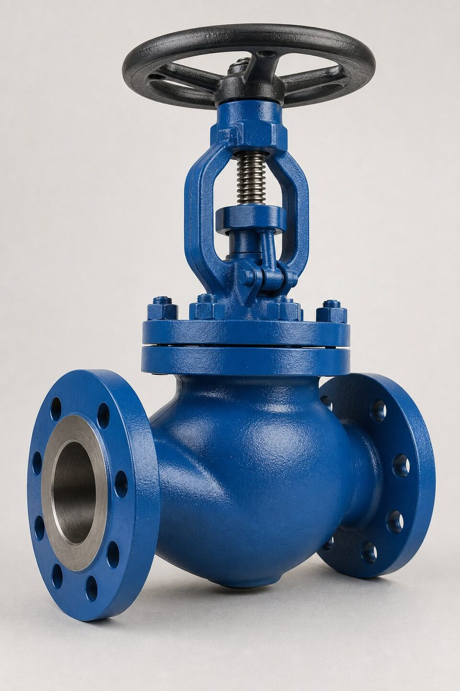

ساختار و اصل کار
در شیر گلوب، دیسک با حرکت خطی عمود بر نشیمنگاه، سطح عبور جریان را تغییر میدهد. جریان برای عبور باید دو بار تغییر جهت دهد که افت فشار ذاتی این طرح را توضیح میدهد اما همین هندسه، کنترل دقیق و پایدار را ممکن میسازد. اجزای اصلی شامل بدنه، بونت، ساقه، دیسک و نشیمنگاه است و بسته به فشار کاری، بونت میتواند پیچی، جوشی یا فشاری باشد. حرکت چند دور فلکه یا عملگر، باز و بسته شدن تدریجی را فراهم میکند و همین ویژگی، گلوب را از شیرهای یکچهارمچرخش متمایز میسازد.

انواع دیسک و کاربرد هر یک
- دیسک سوزنی: کنترل دقیق در دبیهای کم و خطوط نمونهگیری.
- دیسک تخت: قطع و وصل عمومی با آببندی خوب.
- دیسک مخروطی: ترکیب قطع و تنظیم با تحمل سایش بهتر.
- دیسک با نشیمنگاه نرم: آببندی کلاس بالا در دماهای پایین.
طرحهای بدنه
سه طرح اصلی بدنه وجود دارد: طرح زاویهای که ورودی و خروجی عمود بر هم هستند و نقش زانو را هم ایفا میکنند؛ طرح سهراهه برای ترکیب یا انشعاب جریان؛ و طرح استاندارد با پورتهای همراستا که رایجترین است. در سایزهای بزرگ و فشارهای بالا، بدنهها معمولاً فورج یا ریختگی با حداقل ضخامت مطابق مرجع طراحی شیرآلات ساخته میشوند. انتخاب طرح بدنه باید با چیدمان خط هماهنگ باشد تا از زانوهای اضافی و افت فشار غیرضروری جلوگیری شود.
معیارهای انتخاب
برای انتخاب گلوب مناسب، چهار پرسش کلیدی وجود دارد: وظیفه شیر قطع است یا تنظیم؟ افت فشار مجاز خط چقدر است؟ دما و فشار کاری چه محدودیتی برای متریال ایجاد میکند؟ و سیکل کاری شیر چقدر است؟ برای تنظیم پیوسته با دقت بالا، گلوب با تریم مناسب یا شیر کنترل واقعی انتخاب میشود؛ برای تنظیمهای موردی، گلوب استاندارد کافی است. در سرویسهای دمای بالا، متریال بدنه و تریم باید متناسب انتخاب شود و در سرویسهای ساینده، نشیمنگاه سختکاریشده عمر را افزایش میدهد.
نصب و نکات عملیاتی
جهت نصب گلوب اهمیت زیادی دارد: جریان باید معمولاً از زیر دیسک وارد شود تا در حالت بسته، فشار به آببندی کمک کند و امکان تعویض پکینگ در برخی طرحها وجود داشته باشد. در خطوطی که افت فشار حساس است، محل نصب گلوب باید با محاسبه هیدرولیکی تایید شود. برای شیرهایی که در دمای بالا کار میکنند، انبساط خط و بارهای وارده به بدنه باید در طراحی ساپورتها دیده شود. در نهایت، در نقاطی که دسترسی اپراتور محدود است، استفاده از گیربکس یا عملگر از روز اول در نظر گرفته شود.
مدارک و تستها
مدارک یک شیر گلوب باید شامل گواهی مواد، گزارش تست بدنه و نشیمنگاه و در صورت توافق، معیار نشتی مشخص باشد. تست بدنه با فشار بالاتر از فشار کاری و تست نشیمنگاه مطابق مرجع تست انجام میشود. در سفارشهای پروژهای، ذکر مرجع تست و معیارهای پذیرش در اسناد خرید از اختلاف در مرحله تحویل جلوگیری میکند و بازرسی شخص ثالث نیز در صورت نیاز قابل هماهنگی است.
خرابیهای رایج و عیبیابی
شیرهای کروی به دلیل ساختار و کاربرد کنترلیشان، الگوی خرابی شناختهشدهای دارند. رایجترین مشکل، نشتی در وضعیت بسته است که معمولا از فرسایش یا خط افتادن روی نشیمن ناشی میشود؛ در سرویسهای حاوی ذرات، این فرسایش سریعتر رخ میدهد و با افت تدریجی آببندی خود را نشان میدهد. مشکل دوم، گیر کردن یا سخت شدن حرکت ساقه است که میتواند از تورم پکینگ در دمای بالا، خوردگی رزوهها یا رسوبگذاری در اطراف ساقه ناشی شود. در شیرهای با عملگر، پاسخ کند یا ناقص اغلب به تامین هوای عملگر یا موقعیتیاب مربوط است و نه خود شیر. برای عیبیابی موثر، ابتدا باید مرز مشکل را مشخص کرد: آیا مشکل مکانیکی شیر است یا فرمان و عملگر؟ تست دستی شیر در صورت امکان، این تفکیک را ساده میکند. در تعمیرات، سنگزنی نشیمن و دیسک برای خطهای سطحی و تعویض قطعات برای فرسایش عمیق، روش استاندارد است و پس از تعمیر، تست نشتی نشیمن قبل از بازگشت به سرویس الزامی است.
جمعبندی
شیر گلوب ابزار کنترل جریان در خطوط صنعتی است: با انتخاب نوع دیسک متناسب وظیفه، طرح بدنه هماهنگ با چیدمان خط و متریال سازگار با سیال، این شیر سالها دقیق و قابل اتکا کار میکند. در استعلام، نوع دیسک و مرجع تست را صریح ذکر کنید تا پیشنهادها همشرایط و قابل مقایسه باشند.
سوالات رایج
چرا به آن شیر کروی میگویند؟
به دلیل شکل تقریباً کروی بدنه در طراحیهای اولیه؛ هرچند بدنههای امروزی اشکال متفاوتی دارند اما نام گلوب حفظ شده است.
انواع دیسک گلوب کداماند؟
دیسک سوزنی برای تنظیم دقیق، دیسک تخت برای قطع و وصل عمومی و دیسک مخروطی برای ترکیب هر دو؛ انتخاب بر اساس وظیفه شیر در خط انجام میشود.
آیا گلوب در هر جهتی نصب میشود؟
خیر؛ جهت جریان باید مطابق فلش روی بدنه و معمولاً از زیر دیسک باشد. نصب معکوس، آببندی و رفتار کنترل را مختل میکند.
در استعلام چه مواردی ذکر شود؟
سایز، کلاس، متریال بدنه و تریم، نوع دیسک، نوع بونت و مرجع تست؛ ذکر سرویس واقعی نیز به پیشنهاد صحیح کمک میکند.
مطالب مرتبط
با ذکر سایز، کلاس، متریال و نوع دیسک، شیر گلوب منطبق با مرجع تست به همراه مدارک عرضه میشود.
مشاهده صفحه محصول ← ثبت RFQ همین محصولتامین این تجهیزات را به پیشرو تجهیز فرتاک بسپارید
شرکت پیشرو تجهیز فرتاک تامینکننده تخصصی تجهیزات صنعتی برای پروژههای نفت، گاز، پتروشیمی، فولاد و نیروگاهی است. برای دریافت پیشنهاد فنی و قیمت، استعلام (RFQ) خود را ثبت کنید تا کارشناسان مهندسی فروش در کوتاهترین زمان پاسخ دهند.
- تامین شیرآلات صنعتیخانواده کامل شیر با گواهی مواد و تست
- تامین تجهیزات صنایع نفت و گازپکیج مواد مطابق وندورلیست